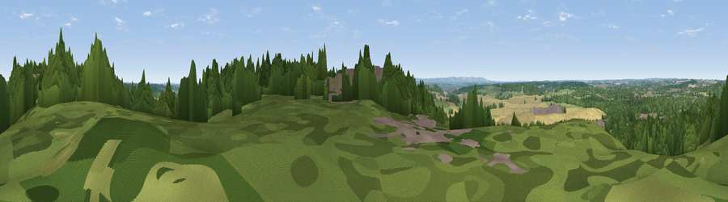

Viewpoint near Hermitage
#40848 in England · top 73% of its area beats it · near Hermitage · access?Where it is
The exact computed spot (SU 50575 71425). Click the marker for map links.
Public access: no public right of way or access land is recorded at this exact spot — it may be on private land. Computed from Natural England's CRoW access layer and OpenStreetMap rights of way — not the legal definitive map. Always verify locally.
The view, rendered

A 360° render of this exact spot computed from the terrain model, tree cover and land cover — summer colours, afternoon light, calibrated against photographs of famous viewpoints. Real trees, hedges and buildings will differ in detail.
The panorama
Grey silhouette: terrain skyline in each direction (720 bearings, Earth curvature and refraction included). Dashed green: skyline with trees (+15 m) and buildings (+8 m) as obstacles. Blue strip: how far the ground is visible on each bearing.
Where the view opens
Wedge length = distance to the farthest visible ground on that bearing (vegetation-aware). Rings at 10, 25 and 50 km.
What fills the view
44% woodland · 25% grassland · 23% cropland · 7% built-up
Angular shares of the visible panorama (visual magnitude), not map area. Landscape diversity 0.54 (0–1 Shannon).
Key numbers
More beautiful places nearby
The staircase of upgrades: each row has a higher view potential than everything closer. Driving times are estimates from straight-line distance, calibrated against real road routing — check an actual route before setting out.
| Place | Direction | Drive | Score |
|---|---|---|---|
| Viewpoint near Hermitage | NNE · 0 km | ~1 min | 27.5 |
| Viewpoint near Hermitage | N · 2 km | ~5 min | 28.7 |
| Viewpoint near Cold Ash | S · 2 km | ~6 min | 34.1 |
| Viewpoint near Thatcham | SSE · 3 km | ~8 min | 36.5 |
| Viewpoint near Upper Bucklebury | SE · 5 km | ~11 min | 36.9 |
| Viewpoint near Compton | NNE · 9 km | ~17 min | 44.3 |
| Viewpoint near Compton | NNE · 11 km | ~22 min | 64.1 |
| Viewpoint near Ecchinswell | S · 14 km | ~26 min | 65.7 |
51.43957, -1.27376 · source: screening · position refined by local search. Computed location — check access rights before visiting.